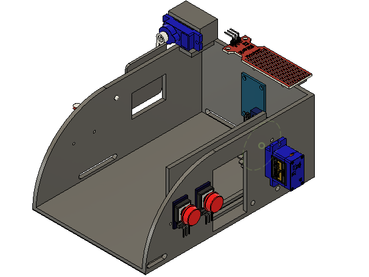
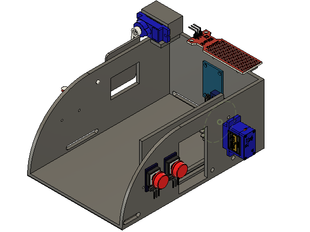
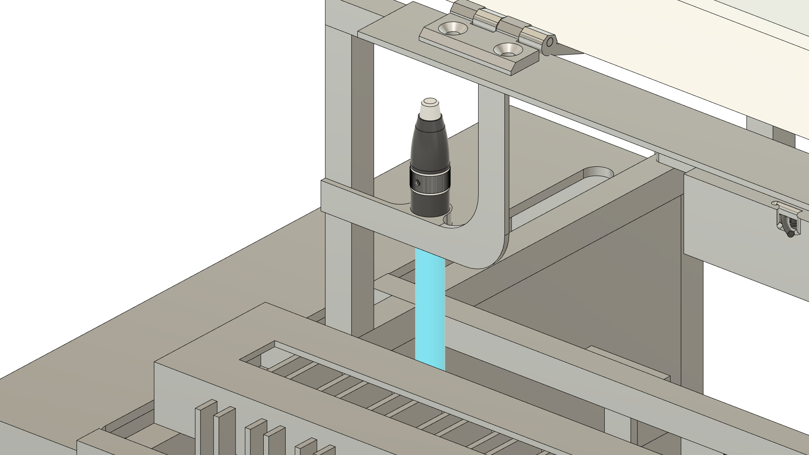
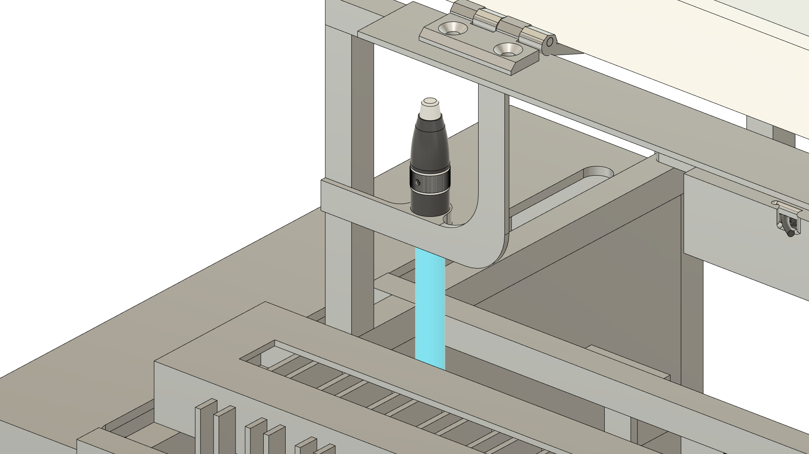

Dimas Dwi Septian
Telkom University student
I’m passionate about 3D and PCB design
Let me share with you some of my projects
I’d like to share my projects with you, including 3D design, PCB design, and more. I hope you enjoy exploring my page.
Telkom University student
I’m passionate about 3D and PCB design
Let me share with you some of my projects
 

To complete my final project in the IoT course, I developed a small-scale smart home simulation equipped with several sensors, including gas, water, and light sensors. I also integrated servo actuators to operate the opening and closing mechanisms of doors and windows. The body of the device was built using filament material.


For my final project in the Sensors and Actuators course, I developed a small-scale simulation of an Automatic Roof system. It is equipped with sensors such as water and light sensors, and uses a JGA motor actuator as the sliding mechanism for the roof. The body of the device was built using filament material.

A custom holder for the Raspberry Pi camera that allows the addition of a front filter, such as a glass layer with a maximum thickness of 3 mm, coated with a specific film.
.png) 



.png)
A small-scale simulation device designed to filter industrial wastewater by applying an electric current through iron plates. After the filtration process, a pump transfers the clean water to another section. The system is also equipped with pH and turbidity sensors to measure water quality, as well as an ultrasonic sensor to monitor the water level in the simulation tank.

An automatic river-cleaning device designed to operate within a 50-meter radius. It is capable of separating metal and non-metal waste, while also monitoring the collected waste weight and assessing the quality of the river water.


A custom case designed for the Raspberry Pi 4 Model B, integrated with a 5G module inside the enclosure.
A PCB integrated with a DHT sensor, enabling direct temperature readings within a single board.
A PCB integrated with an LDR sensor, designed to make decisions for controlling an actuator through a built-in motor driver IC.
Email: dimasdwiseptian04@gmail.com
Instagram: @dwidiim